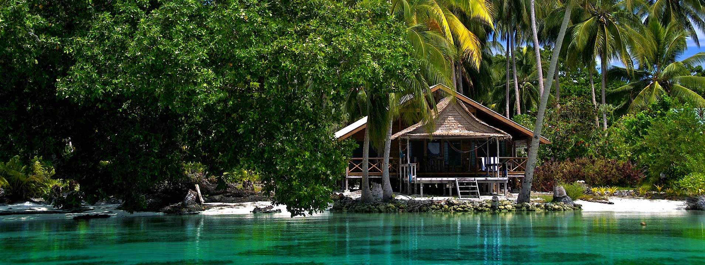
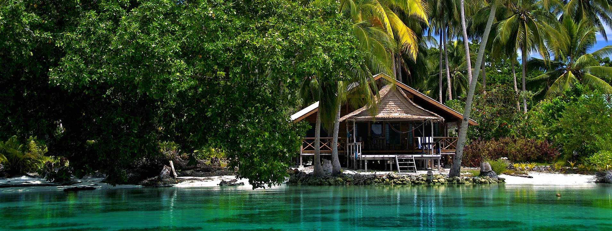
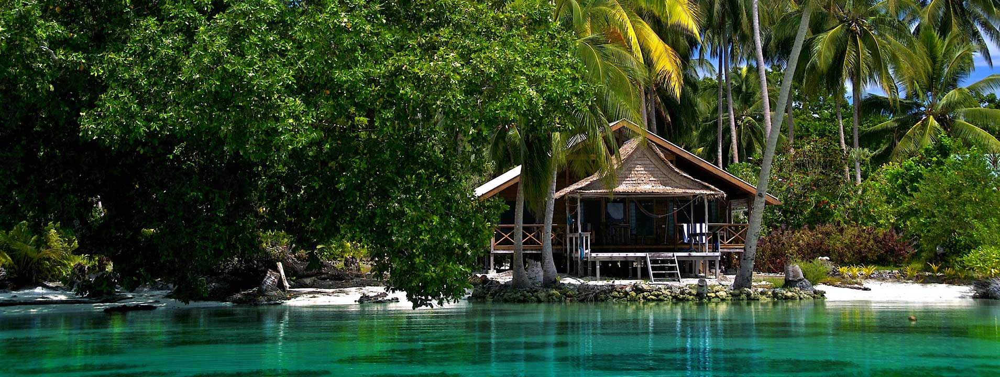

Choose your Biome!
Select tile that appeals to you most. Hover over image to see more details.
 


Select tile that appeals to you most. Hover over image to see more details.

Select tile to set budget. Hover an image to see more details.


Select tile to set additonal conditions. Hover an image to see more details.